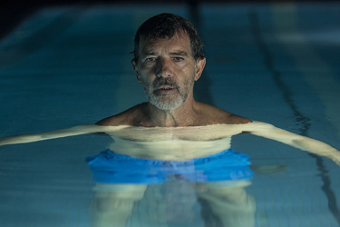
Antonio Banderas - Salvador Mallo
Penélope Cruz - Jacinta (as a young woman)
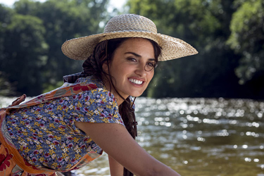
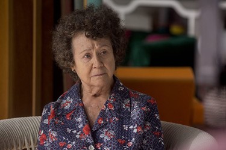
Julieta Serrano - Jacinta (elderly)
Cecilia Roth - Zulema
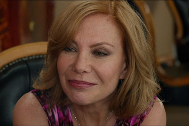
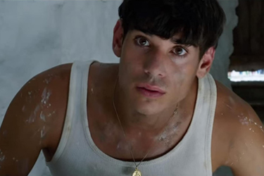
César Vicente - Eduardo, the carpenter-painter
Federico Delgado
Mercedes
Mercedes, the washer woman
Salvador Mallo (child)
Venancio Mallo
Camello
Spectactor
Agustín Almodóvar - Choir Master
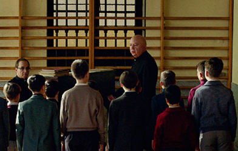
The film narrates a series of reunions of Salvador Mallo, a film director in his decline. Some of these reunions play out in real time, others are recalled through flashbacks: his childhood in the 1960s, when he moved with his family to the primitive village of Paterna, his schooling, his first adult love in Madrid in the 1980s, the pain of the breakup of this relationship, writing as a therapy to forget, the discovery of cinema, facing the impossibility of continuing filming, etc.
Spanish film director Salvador Mallo is in the middle of a creative crisis, afflicted with physical and mental ailments, just as an earlier film of his - Sabor (Flavour) - has been remastered and re-released to appreciative audiences. Prompted by his old friend, Zulema he calls in on Alberto Crespo, the lead actor from Sabor, with whom he has not spoken for 32 years due to a quarrel over the influence of the actor's heroin use on his performance. Crespo introduces Salvador to heroin smoking.
When taking the drug Salvador revisits some of his childhood experiences: one takes place during his childhood, where he moves into a whitewashed cave house with his father and mother Jacinta, and a local labourer named Eduardo learns to read and write under his tutelage.
Crespo brings a monologue of Salvador's memories from 1980s Madrid to the stage in which Salvador's lover Federico is mentioned; Federico happens to be sitting in the audience. Federico (who has married and had children in Argentina) meets Salvador in his apartment where the pair drink toasts to one another, reminisce and flirt briefly before parting amicably. Salvador recognizes that his struggles with heroin and drug addiction mirrors that which he witnessed in Federico during their time together. With his assistant, Mercedes, he tells a doctor that he needs treatment for his back pain and heroin addiction.
In a flashback, his now-elderly mother accuses him of having left her and of not having been a good child. Before he can prove his love to her, she dies in the hospital instead of in the country, as she had wished. Salvador's assistant hands him an invitation to attend an art exhibition and he recognizes himself as the boy in a drawing on display. His memory flashes back to the cave home when the labourer was tiling the kitchen. Eduardo stops to sketch Salvador sitting in the sun, then says he needs to bathe. Salvador leaves to lie down on his bed, sweating from the heat, and faints from sunstroke when fetching a towel for Eduardo.
Back in the present day, and Salvador has bought Eduardo's portrait of him, which he had sent to his mother while Salvador was away at school but she had hidden from him. On the reverse side is a letter from Eduardo thanking Salvador for teaching him to read and write. Mercedes says it would be easy to find Eduardo again through Google or by asking around at the village, but Salvador dismisses the idea.
He finally undergoes surgery to remove a growth affecting his throat that was causing him to occasionally choke for no reason. In the final scene we revisit the young Salvador with his mother en route to their new home in the village of cave houses: they are having to sleep on the floor of a train station because the village they are passing through is having their local fiesta. The young Salvador watches the village's fireworks in wonderment, fixated on the spectacle, while his mother is visibly anxious and upset with her situation. The camera moves back and reveals a sound engineer recording the pair on the floor of a movie set. We see Salvador behind the camera, recreating a memory from his childhood on film, his creative crisis overcome.
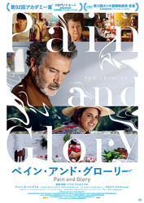
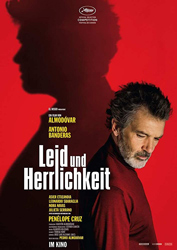
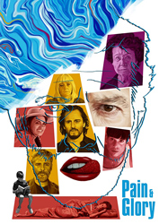
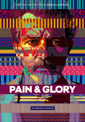
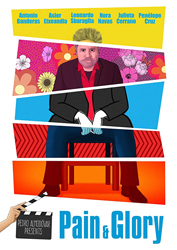
Luis María Delgado (1961) - Poster on a wall.
Juan Solano and Rafael de León - Performed by Rosalía and Penélope Cruz